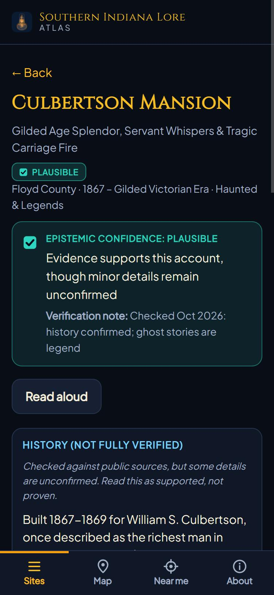

Southern Indiana Lore
Android release · Web betaSouthern Indiana is full of history and folklore most people drive right past. Lore points it out, and every story shows its source and how solid the evidence is.

Runs on: Android 7+; browser edition for iPhone and desktop. Android tested on an S25 Ultra; other devices remain untested.
Inside the build & known limits
Why I built it: I kept wondering what stories were sitting in the places I pass every day. I wanted a phone that would tell me.
What it does: Offline site data, location alerts, narration, and a browser atlas.
What's still rough: GPS alerts are an Android feature. The web atlas needs to stay open for Near me. The map is schematic, and some historical details remain unverified.
Read the verification log ↗